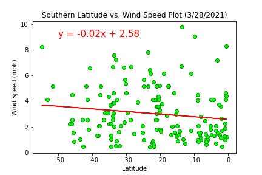
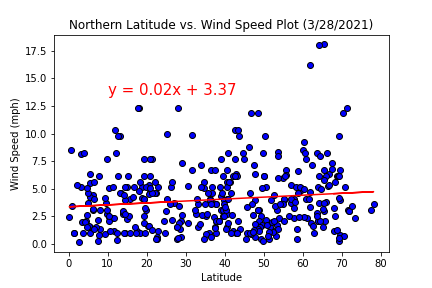

Quick Links
Click on an image below to see what weather is like during your prjected trip date.
Wind Speed and Latitude



When looking at wind speed per latitude, we can see that there are records of higher wind rates in the northern hemisphere. This is attributed to the higher landmass that is associated with increased population and datapoints. This also explains the difference in the windspeed scale for the graphs shown. While, the scatter plot seems to follow a trend that could fit a linear regression model, it still does not provide a high level of accuracy or trend. Further analysis of windspeed and elevation can shed light on more concrete, global trends.